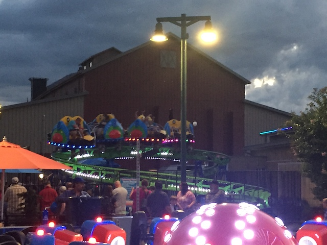
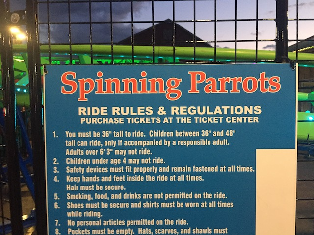

| |
Spinning Parrot Review

We're here at the Island Pigeon Forge, where we'll be reviewing their kiddy coaster (and their only coaster since this is a mall). It's a kiddy spinning coaster. Yipee. So let's climb in the car, and off we go. We go around a spiral lifthill. It's only 10 ft. Sad. And then, a spiral drop. It's only 10 feet. But whatever. Wee. We head around a turn and go again. I know we officially have this credit, but we must continue taking laps on this thing. And then we get at least 6 more laps on this thing. Dammit!! *Sigh* Such is the price a credit whore pays. But honestly, if they took a kiddy coaster with one of the bigger layouts, such as the large Vekoma Roller Skaters, and put on these spinning cars, it could actually be a legitimatly fun kiddy coaster. Especially on the ones that actually somewhat spin. Well, at least I got my credit. Cha-Ching.
2/10
Location: Island in Pigeon Forge
Opened: 2018
Built by: SBF Visa Group
Last Ridden: July 22, 2019
I have ridden this exact same ride at the following parks.
Cliffs
Playland's Castaway Cove
Silverwood
Waldameer
Spinning Parrot Photos

Home
|